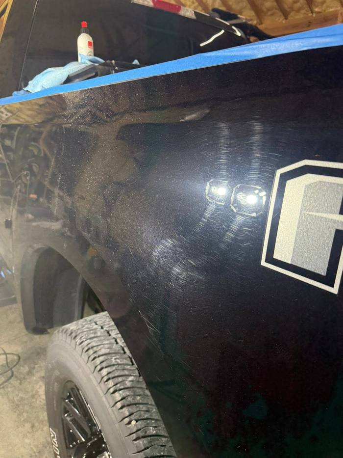
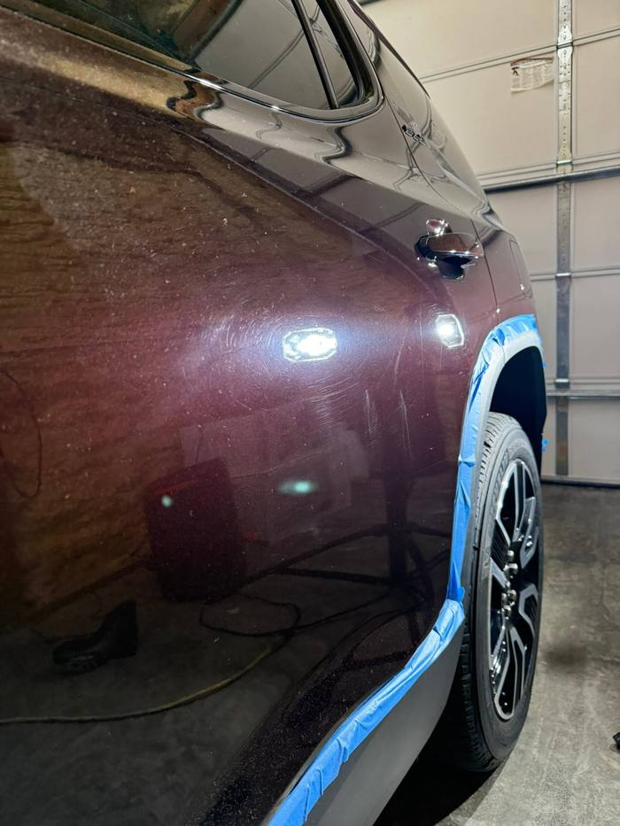

Internal Review, Not for Publishing
Nothing on this page goes live until Logan confirms it. Photos below are grouped by the Facebook post they came from, which means same-day uploads, but the before/after pairings are guesses that need a yes or no from Logan. Delete this page once the real section is wired up.
Question 1
All eight photos came from one Facebook post. Three look like befores, three like afters. Which before goes with which after, and is this one vehicle or more than one?


PAIR 1? Front seat and floor


PAIR 2? Driver side floor


PAIR 3? Rear bench
Question 2
These came from three correction posts. If any pair shows the same panel before and after polishing, say which two, and they become correction pairs on the site. The work light shot may be a defect inspection (a natural before), or a final check (an after). Logan will know.





Note: A-1 is from a different post than A-2 through A-5, but the vehicles look similar. Logan should confirm whether these are the same truck and same visit.